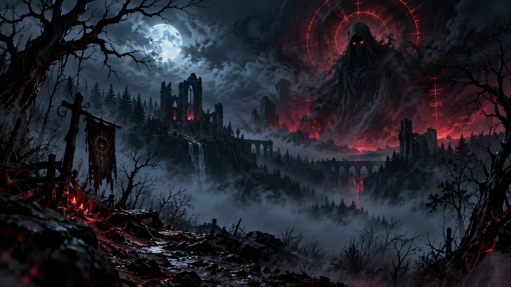
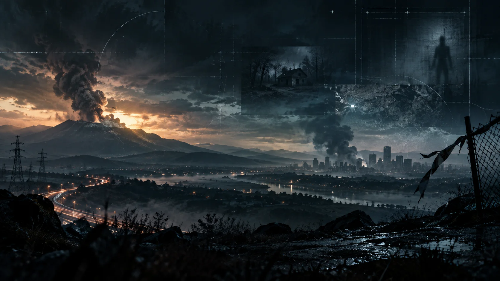
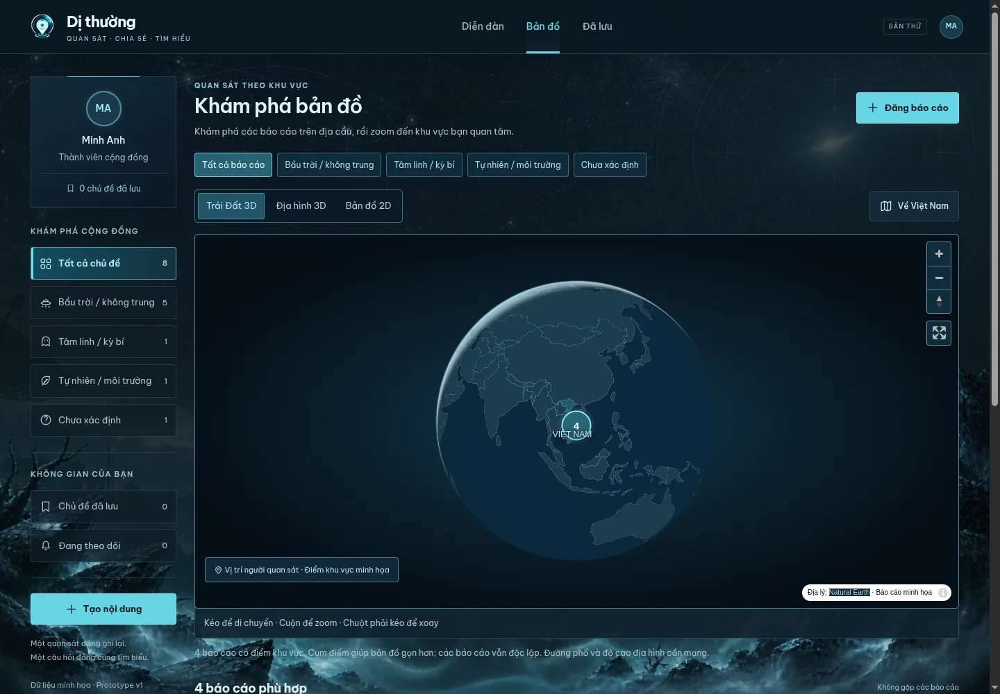

Ghi lại điều bạn thấy
Mô tả hiện tượng, thời gian, vị trí người quan sát và những đặc điểm bạn nhớ. Đính kèm ảnh, video hoặc âm thanh nếu có.
Thử đăng báo cáoCHO NHỮNG ĐIỀU CHƯA CÓ LỜI GIẢI
Ghi lại hiện tượng, xem báo cáo theo khu vực và cùng cộng đồng trao đổi từ dữ liệu.
Từ bầu trời đến những trải nghiệm gần gũi. Chọn một không gian để đọc, đặt câu hỏi hoặc chia sẻ quan sát.
UFO/UAP, đốm sáng và những chuyển động khó nhận diện.
Khám phá nhóm ↗
Trải nghiệm lạ, âm thanh và những câu chuyện cần thêm bối cảnh.
Khám phá nhóm ↗Ánh sáng, thời tiết và những biến đổi bất thường quanh ta.
Khám phá nhóm ↗
Chưa biết gọi tên? Bắt đầu bằng những gì bạn thực sự quan sát.
Khám phá nhóm ↗Ảnh minh họa không gian chủ đề, không phải bằng chứng về các hiện tượng.
ĐẶT QUAN SÁT VÀO BỐI CẢNH
Đọc các báo cáo theo khu vực, xem vị trí người quan sát và mở từng ghi nhận để tìm hiểu thời gian, bối cảnh, dữ liệu đi kèm.
Các điểm gần nhau được hiển thị thành cụm để dễ khám phá. Mỗi báo cáo vẫn giữ câu chuyện và luồng trao đổi riêng.
Mở bản đồ 3D
Mô tả hiện tượng, thời gian, vị trí người quan sát và những đặc điểm bạn nhớ. Đính kèm ảnh, video hoặc âm thanh nếu có.
Thử đăng báo cáoTrao đổi ngay trong báo cáo, hoặc mở chủ đề riêng để đối chiếu nhiều ghi nhận. Dẫn nguồn và đính kèm tài liệu cho lập luận của bạn.
Xem một chủ đề đối chiếuLưu chủ đề để đọc lại, theo dõi trao đổi và xem tóm tắt hiện tại do tác giả cập nhật: giả thuyết nào đang được bàn, dữ liệu nào còn thiếu.
Đọc tóm tắt thảo luậnTÒ MÒ, NHƯNG CÓ TRÁCH NHIỆM
Bạn có thể chưa biết mình đã thấy gì. Cuộc trao đổi vẫn có thể bắt đầu bằng sự trung thực và tôn trọng.
Mô tả điều đã ghi nhận; nêu rõ khi bạn đang suy đoán hoặc dẫn lại thông tin từ người khác.
Nhiều người đồng tình chưa đủ để chứng minh một hiện tượng. Hãy xem dữ liệu và cách lập luận.
Phản biện ý kiến bằng lý do và nguồn tham khảo. Tránh công kích cá nhân hay tiết lộ thông tin riêng tư.
Có. Một báo cáo có thể bắt đầu bằng mô tả, thời gian và vị trí người quan sát. Nêu rõ những gì bạn nhớ và phần nào chưa chắc chắn; tệp đính kèm là tùy chọn.
Báo cáo ghi lại một quan sát cụ thể và có thể xuất hiện trên bản đồ khi có vị trí phù hợp. Chủ đề thảo luận dành cho câu hỏi, kiến thức hoặc đối chiếu nhiều báo cáo; bản thân chủ đề không tạo điểm trên bản đồ.
Không tự động. Báo cáo là ghi nhận của người chia sẻ; các cách giải thích trong thảo luận cần được xem xét dựa trên dữ liệu. Tóm tắt trao đổi không phải chứng nhận khoa học.
Bạn đang xem bản prototype để hình dung sản phẩm. Diễn đàn, biểu mẫu và bản đồ có thể thử ngay; dữ liệu được lưu cục bộ trên trình duyệt, chưa có tài khoản hay máy chủ cộng đồng thật.